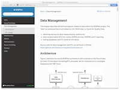
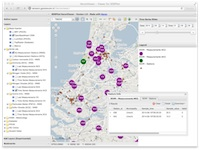
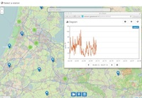
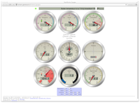
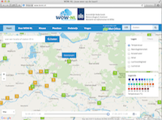

SOSPilot
Home of the RIVM/Geonovum SOSPilot project (2014-2015)
Home of the RIVM/Geonovum SOSPilot project (2014-2015)
31.08.2017: This project ran in 2014-2015. More recent developments are in the follow-up project Smart Emission and other projects within the Geonovum Sensor-data and Smart Cities program. Web services and data have been archived and available on request. Information and documentation here is kept for reference. The Geonovum Weather Station is still active.
The main goal of this project was to take raw Air Quality Measurements from the Dutch RIVM Landelijk Meetnet Luchtkwaliteit and publish this data using various open (OGC) geospatial standards in particular those related to INSPIRE and Eionet. For this purpose a technical platform, "SOSPilot" has been developed. This website provides links to various elements of the SOSPilot platform. In addition, a weather station has been added to the platform. In 2015 and further, much of the technology and ideas from the SOSPilot project have been applied within the Smart Emission project.
Project-related documents.
|  |
Find all technical documentation on http://sospilot.readthedocs.org. Software architecture, transformation (ETL), web services (WMS, WFS, SOS) and various clients apps. Details for the Smart Emission project can be found at data.smartemission.nl. |
| [PDF] | Research Article: "Building bridges: experiences and lessons learned from the implementation of INSPIRE and e-reporting of air quality data in Europe" by: Alexander Kotsev, Olav Peeters, Paul Smits and Michel Grothe. - Earth Sci Inform DOI 10.1007/s12145-014-0160-8 |
| [Slides] |
Presentation of the SOSPilot architecture, implementation and results at Geonovum on July 2, 2014. Slides on Slideshare |
Below are various web-clients that connect to the AQ Web Services. Click on an image to launch a client. These clients have been discontinued. Find the same web-clients on the Smart Emission website and for the SOS Viewer via RIVM. The links below direct there.
|  | HeronViewer - Web-based viewer for WMS and WFS - Raw measurements data viewing and searching via WMS and WFS. Both last measured values per component and station and time-series via a timeslider using WMS-Time. This viewer is built with the Heron Mapping Client (Heron MC). |
|  | SOS-viewer created with the 52North js-sensorweb-client. It uses the REST API from the SOS service, here the RIVM SOS, to show RIVM LML Air Quality data. One can also download CSV timeseries (click (I) Info button). |
In addition to AQ data, weather data is also exercised in the project using a Davis Vantage Pro2 weather station at the Geonovum building roof. Read the documentation on how the Geonovum weather station has been setup and connected to OWS (WMS-Time, WFS and SOS) and public weather services like Weather Underground and KNMI WOW.
 |
Report from the Geonovum Davis Weather Station The Python weewx weather software on a Raspberry Pi collects weather data from the Davis Vantage Pro2 Weather Station on the Geonovum-building rooftop. weewx generates this report every 5 mins. The weather data is also published to WMS-Time/WFS and SOS services similar to RIVM AQ data. |
|  | Report from the Geonovum Davis Weather Station as Gauges Another cool weather data view using the Steelseries Gauges. All pure JavaScript! |
|
|
The Geonovum Davis Weather Station (via weewx on the Raspberry Pi) is also actively publishing to the Weather Underground (WunderGround) community. Every 5 minutes the weather is published to WunderGround. See a detailed report and forecast here and via the WunderMap. |
|  | The Geonovum Davis Weather Station (via weewx on the Raspberry Pi) is also actively (every 5 mins) publishing to MET UK Weather Observations Website (WOW). The station is registered with WOW site ID 929236001, The Dutch KNMI has a localized version, at wow.knmi.nl. Zoom in to Amersfoort to see the Geonovum station. |
Services for OGC SOS have been discontinued as the project was finished. SOS requests will be redirected to the RIVM SOS which AQ data from the same LML stations.
All development (tasks/issues, source code etc) took place via Github. This repository is still available for reference.
Project home: https://github.com/Geonovum/sospilot.
Issue tracker: https://github.com/Geonovum/sospilot/issues.